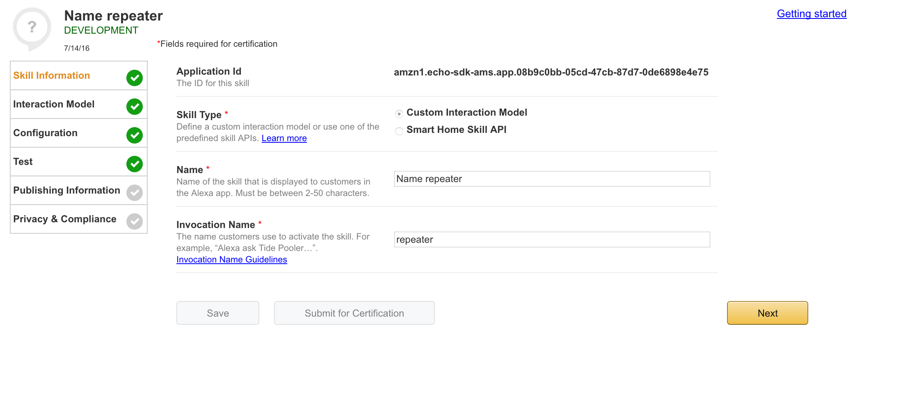
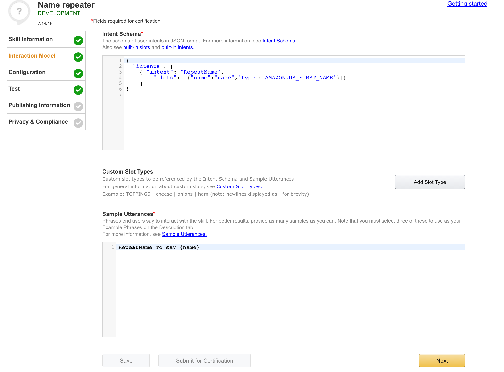

Voice Controlled
Home Automation
in JavaScript
Jeff Sacks
Outline
- Questions - Interrupt at any time
- Discuss Home Automation
- Discuss Voice Technologies
- Build Skill for Amazon Echo
- Control a TV with just our voice
Twitter: @jeff_sacks
GitHub: jrsacks
DRW Trading Group (Chicago)
JavaScript, Ruby, Clojure, Java
Home Automation
- Philips Hue Connected Bulb
16 Million ColorsControl lights from anywhere via appGeofencing, scheduling, sync with music
- Nest Learning Thermostat
Learns what temps you likeSaves you moneyAlerts
- Samsung SmartThings Hub
Lighting, Security, EntertainmentSensors: Water leak, arrival, motionControl via an app
Voice Services
- Cars - Ford Sync
First released in 2007Make calls or send textsInteract with navigationControl music and climate
- Phone/Computer - Siri/Cortana/Google Now
Make calls or send textsSet timers/calendarControl music
- Devices - Amazon Echo
Amazon Echo
Fancy speaker for $179
Always listening for 'Alexa' (or 'Amazon' or 'Echo')
- Alexa, What's the weather for tomorrow?
- Alexa, What time is it?
- Alexa, Who was the 23rd president?
- Alexa, What is your birthday?
- Alexa, Tell a joke.
What Is Alexa?

Echo Fun Facts
June 25, 2015 Alexa Skills Kit Released
Write your own skill (app) for Alexa
Over 1,400 published skills
Pandora, Dominos Pizza, Uber, Jeff's TV
Hello World
AWS Lambda Function:
exports.handler = function (event, context) {
context.succeed({
version: "1.0",
response: {
outputSpeech: {
type: "PlainText",
text: "Hello, this is the first demo"
},
shouldEndSession: true
}
});
}
Interaction Model
Utterances
RepeatName To say {name}
Intents
{
"intents": [
{
"intent": "RepeatName",
"slots": [{"name":"name","type":"AMAZON.US_FIRST_NAME"}]
}
]
}
Skill Setup Part 1

Skill Setup Part 2

Repeater Skill
AWS Lambda Function:
exports.handler = function (event, context) {
context.succeed({
version: "1.0",
response: {
outputSpeech: {
type: "PlainText",
text: "I heard you say: " + event.request.intent.slots.name.value
},
shouldEndSession: true
}
});
}
AWS Simple Queue Service (SQS)
- SendMessage
- ReceiveMessage
- DeleteMessage
Sending to AWS SQS:
var AWS = require('aws-sdk');
var QUEUE_URL = "https://sqs.us-east-1.amazonaws.com/664786522906/midwestJs-demo";
var sqs = new AWS.SQS({region : 'us-east-1'});
exports.handler = function (event, context) {
var value = event.request.intent.slots.name.value;
var params = { MessageBody: value, QueueUrl: QUEUE_URL };
sqs.sendMessage(params, function(error){
var text = "I sent " + value + " to SQS";
if(error){
text = "Error sending to SQS";
}
context.succeed({
version: "1.0",
response: {
outputSpeech: {
type: "PlainText",
text: text
},
shouldEndSession: true
}
});
});
}
Listening to AWS SQS:
var AWS = require('aws-sdk');
var sqs = new AWS.SQS({apiVersion: '2012-11-05', region : 'us-east-1'});
var params = {
QueueUrl: "https://sqs.us-east-1.amazonaws.com/664786522906/midwestJs-demo",
MaxNumberOfMessages : 1,
WaitTimeSeconds: 20
};
sqs.receiveMessage(params, function(err, data) {
if(data && data.Messages){
data.Messages.forEach(function(message){
console.log(message.Body);
});
}
});
TiVo TCP Remote Protocol
COMMAND {PARAMETER} {PARAMETER}...
FORCECH 602
TELEPORT GUIDE
TELEPORT LIVETV
Using TiVo TCP Remote Protocol
var express = require('express');
var net = require('net');
var tivo = net.connect({host: '192.168.1.7', port: 31339}, function(){
var app = express();
app.get('/tivo/ch/:channel', function(request, response){
tivo.write("FORCECH" + request.params.channel + "\r");
response.end();
});
app.get('/tivo/:command/:val', function(request, response){
tivo.write(request.params.command + request.params.val + "\r");
response.end();
});
app.listen(3000);
});
Sharp Aquos TCP Protocol
{COMMAND}{PARAMTER}<CR>
4 Character length Command
4 Character length Parameter
- Power: "POWR0 \r"
- Input: "IAVD3 \r"
- Volume: "VOLM18 \r"
- Mute: "MUTE2 \r"
TV Socket Wrapper
function tvConnection(socket){
var volume = 15;
function sendCommand(command, value){
if(value.length === 4){
socket.write(command + value + "\r");
} else {
sendCommand(command, value + " ");
}
};
function setVolume(vol){
volume = vol;
changeVolume(0);
};
function changeVolume(change){
volume += change;
sendCommand("VOLM", volume.toString());
};
function power(on){
if(on){
sendCommand("POWR", "1");
sendCommand("IAVD", "1");
} else {
sendCommand("POWR", "0");
}
}
function mute(on){
sendCommand("MUTE", on ? "1" : "2");
}
return {mute: mute, power : power, setVolume : setVolume, changeVolume: changeVolume};
}
TiVo Socket Wrapper
function tivoConnection(socket){
function sendCommand(command, value){
socket.write(command + " " + value + "\r");
}
function setChannel(channel){
sendCommand("FORCECH", channel);
}
return {sendCommand : sendCommand, setChannel : setChannel};
}
var tvSocket = net.connect({host: '192.168.1.3', port: 10002}, function(){
var tivoSocket = net.connect({host: '192.168.1.7', port: 31339}, function(){
buildApp(tvConnection(tvSocket), tivoConnection(tivoSocket));
});
});
TiVo Routes
function buildApp(tv, tivo){
var app = express();
app.use(express.static('public'));
app.use(function (request, response, next) {
next();
response.end();
});
app.get('/tivo/ch/:channel', function(request, response){
tv.power(true);
tivo.setChannel(request.params.channel);
});
app.get('/tivo/:command/:val', function(request, response){
tivo.sendCommand(request.params.command, request.params.val);
});
app.listen(3000);
}
TV Routes
app.get('/tv/volume/:vol', function(request, response){
var volParam = request.params.vol;
if(volParam === 'up'){
tv.changeVolume(1);
} else if (volParam === 'down'){
tv.changeVolume(-1);
} else {
tv.setVolume(parseInt(volParam, 10));
}
});
app.get('/tv/mute', function(request, response){
tv.mute(true);
});
app.get('/tv/unmute', function(request, response){
tv.mute(false);
});
app.get('/tv/power/off', function(request, response){
tv.power(false);
});
TV Remote Intents
{
"intents": [
{"intent": "ChangeChannel",
"slots": [{"name": "Channel","type": "LIST_OF_CHANNELS"}]},
{ "intent": "Off"},
{ "intent": "VolUp"},
{ "intent": "VolDown"},
{ "intent": "VolSet",
"slots": [{"name":"Volume","type":"AMAZON.NUMBER"}]},
{ "intent": "Back"},
{ "intent": "Mute"},
{ "intent": "UnMute"}
]
}
Custom Slot Types
LIST_OF_CHANNELS CBS | NBC | ABC | WGN | FOX | ESPN | ESPN2 | CSN | BTN...
TV Remote Utterances
Off turn off
ChangeChannel turn on {Channel}
ChangeChannel change to {Channel}
VolUp turn up the volume
VolUp make it louder
VolUp be louder
VolDown turn down the volume
VolDown make it softer
VolDown make it quieter
VolSet set the volume to {Volume}
VolSet make the volume {Volume}
Back switch back
Back switch to the last channel
Back go back
Mute mute
UnMute unmute
TV Skill (Part I)
var QUEUE_URL = 'https://sqs.us-east-1.amazonaws.com/664786522906/alexa-tv-queue';
var AWS = require('aws-sdk');
var sqs = new AWS.SQS({region : 'us-east-1'});
exports.handler = function (event, context) {
handleIntent(event.request, function(response){
context.succeed({
version: "1.0",
response: {
outputSpeech: {
type: "PlainText",
text: response
},
shouldEndSession: true
}
});
});
};
TV Skill (Part II)
function sendToSqs(message, speech, callback){
var params = { MessageBody: message, QueueUrl: QUEUE_URL };
sqs.sendMessage(params, function(err){ callback(speech); });
}
function handleIntent(intentRequest, callback) {
var intent = intentRequest.intent;
var intentName = intent.name;
var invokeSqs = function(message, speech){
return function(){ sendToSqs(message, speech, callback); };
};
var intents = {
"Off" : invokeSqs("/tv/power/off", "Now Turning off the TV"),
"VolUp" : invokeSqs("/tv/volume/up", "Turning Volume Up"),
"VolDown" : invokeSqs("/tv/volume/down", "Turning Volume Down"),
"Mute" : invokeSqs("/tv/mute", "Muting"),
"UnMute" : invokeSqs("/tv/unmute", "Unmuting"),
"Back" : invokeSqs("/tivo/IRCODE/ENTER", "Switching Back"),
"VolSet" : function(){ setVolume(intent, callback);},
"ChangeChannel" : function(){ changeChannel(intent, callback);}
};
intents[intentName]();
}
TV Skill (Part III)
function channelNumber(val){
if(parseInt(val, 10) > 0){
return val;
}
var channels = {
cbs: 602, nbc: 605, abc: 607,
wgn: 609, fox: 612, espn: 681,
espn2: 682
};
var lower = val.toLowerCase();
return channels[lower];
}
function changeChannel(intent, callback){
var num = channelNumber(intent.slots.Channel.value);
sendToSqs("/tivo/ch/" + num, "Changing the channel to " + num, callback);
}
function setVolume(intent, callback){
var vol = intent.slots.Volume.value;
sendToSqs("/tv/volume/" + vol, "Changing the volume to " + vol, callback);
}
Connecting SQS to the Remote
#!/usr/bin/env sh
set -e
while true; do
node sqsListener.js | xargs -I{} curl http://127.0.0.1:3000{}
done